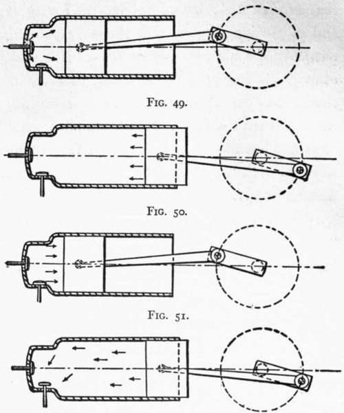

Chapter VIII. Aeroplane Motors
Description
This section is from the book "The New Art Of Flying", by Waldemar Kaempffert. Also available from Amazon: The New Art of Flying.
Chapter VIII. Aeroplane Motors
Marvel as we may at the wonderful ingenuity displayed in the modern flying-machine, we have still much to learn from soaring birds. Little as we know of the efficiency of curved surfaces in the air, we know still less how to drive those surfaces without an inordinate expenditure of power, fuel, and lubricant. We have only to compare the amount of energy expended by the great flying creatures of the earth with that expended by our machines to realise how much we have to learn.
The late Professor Langley long ago pointed out that the greatest flying creature which the earth has ever known was probably the extinct pterodactyl. Its spread of wing was perhaps as much as twenty feet; its wing surface was in the neighbourhood of twenty-five square feet; its weight was about thirty pounds. Yet this huge creature was driven at an expenditure of energy of probably less than 0.05 horse-power.
The condor, which is preeminently a soaring bird, has a stretch of wing that varies from nine to ten feet, a supporting area of nearly ten square feet, and a weight of seventeen pounds. Its approximate horse-power has been placed by Professor Langley at scarcely 0.05. The turkey-buzzard, with a stretch of wing of six feet, a supporting area of a little over five square feet, and a weight of five pounds, uses, according to Langley, about 0.015 horse-power. Langley's own successful, small, steam-driven model had a supporting area of fifty-four feet, and a weight of thirty pounds. Yet it required one and a half horse-power to drive it. How much power is required to fly at high speeds in machines may be gathered from the fact that although Blériot crossed the Channel with a 25 horse-power Anzani motor, and the Wright machine uses a 25-30 horse-power motor, aeroplanes usually have engines of 50 horse-power and upwards. When we consider that one horse-power is equal to the power of at least ten men, we see that even the smallest power successfully used in an aeroplane represents the combined continuous effort of more than two hundred men. To be sure, our flying-machines are very much larger than any flying creature that ever existed; but comparing their weights and supporting surfaces with the corresponding elements of a bird, their relative inefficiency becomes immediately apparent. Mr. F. W. Lan-chester has expressed the hope that some day we may learn the bird's art of utilising the currents and counter-currents of the air for propulsion, so that we may ultimately fly without wasting power.
Aeroplanes are driven by what are known as " explosion engines " or " internal combustion engines." The fuel is not used externally, as in the steam-engine, but is fed to the engine in the form of an explosive gas. The gas is detonated within the engine to drive a piston. Most of these internal combustion engines operate on what is known as the Otto four cycle. A complete cycle comprises four distinct periods, which are diagrammatically reproduced in the accompanying drawings (Figs. 49, 50, 51, and 52).
During the first period (illustrated in Fig. 49) the piston is driven forward, creating a vacuum in the cylinder and simultaneously drawing in a certain quantity of air and gas. During the second period the piston returns to its initial position; all the admission and exhaust valves are closed; and the mixture of air and gas drawn in during the first period is compressed. The third period is the period of explosion. The piston having reached the end of its return stroke, the compressed mixture is ignited by an electric spark, and the resulting explosion drives the piston forward. During the fourth period the exploded gases are discharged; the piston returns a second time; the exhaust valve opens; and the products of combustion are discharged through the opened valve. These various cycles succeed one another, passing through the same phases in the same order.
Fig. 52.
Figs. 49, 50, 51, and 52. The four periods of a four-cycle engine. During the first period (Fig. 49) the explosive mixture is drawn in; during the second period (Fig. 50) the explosive mixture is compressed; during the third period (Fig. 51) the mixture is exploded; and during the fourth period the products of combustion are discharged.
The fuel employed in the internal combustion engines of aeroplanes is gasoline, called petrol in England, which is volatilised, so that it is supplied to the engine in the form of vapour. In order that it may explode, this vapour is mechanically mixed with a certain amount of air. To obtain what is called cyclic regularity and to carry the piston past dead centres, a heavy fly-wheel is employed, the momentum of which is sufficient to keep the piston in motion on the return stroke.
Since considerable heat is developed by the incessant explosions, the cylinders naturally become hot. To cool them, water is circulated around them in a " water-jacket," or else a fan is used to blow air against them.
The memorable experiments of Professor Langley on the Potomac River gave rise to the idea that only an engine of extreme lightness could be employed if the flying-machine was ever to become a reality. Since his time biplanes have lifted three and four passengers besides the pilot over short distances. While the ultimate achievement of dynamic flight was due to the lightness of the internal combustion motor in relation to the power developed, subsequent experiment has demonstrated how the efficiency of the sustaining surfaces can be increased so as to diminish head resistance and to make extreme lightness in the motor desirable only on the score of freight-carrying capacity. The original motor used by the Wrights was comparatively heavy for the power developed.
Saving of weight in the motor permits the construction of a more compact and controllable machine than would be possible if the sustaining surfaces were designed to carry considerable dead weight. To gain freight-carrying capacity the weight of the motor must be kept low. The fuel needed for a six-hour flight, for example, is equal in load to an engine weighing three pounds per brake horse-power, assuming that the hourly fuel consumption is one half a pound per horse-power. Clearly the motor must be light if the flight is to be long.
Continue to: